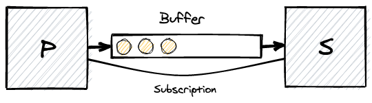
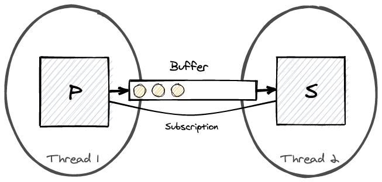
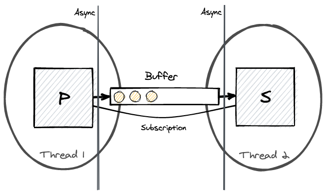
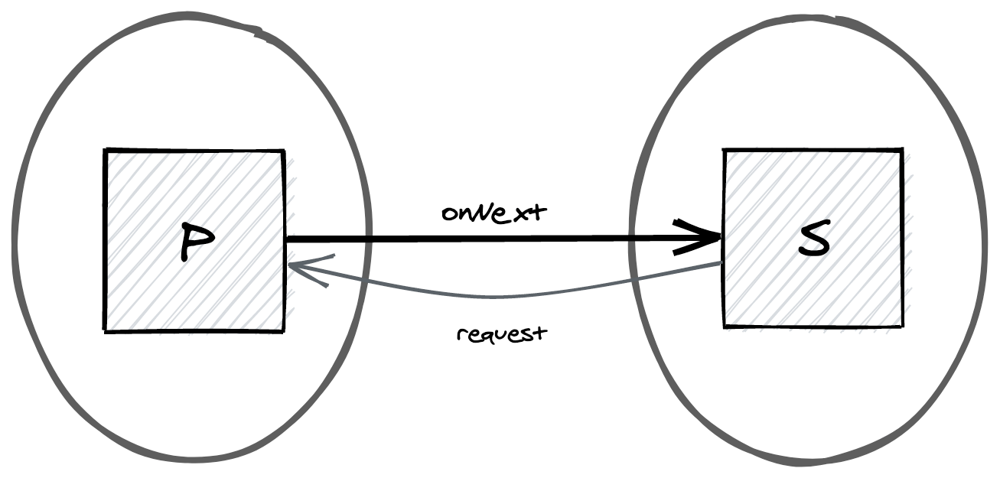

matthis@tthisk:~$ fetch
- matthis@tthisk.com
- role
- software engineer
- langs
- Rust, TypeScript, Go
- editor
- neovim, mostly
- shell
- zsh + too many aliases
- uptime
- since 2012
- contact
- webmaster@tthisk.com
I write about systems, tooling, and the craft of making things for computers.
This is a terminal-flavoured home page. Use the status line at the bottom to move between windows, or press 0–3.
matthis@tthisk:~$ ls -t blog/ | head -3
matthis@tthisk:~$ fortune | cowsay
< Simplicity is prerequisite for reliability. >
---------------------------------------------
\ ^__^
\ (oo)\_______
(__)\ )\/\
||----w |
|| ||
matthis@tthisk:~$
keys: 0-3 windows · ctrl+b ? help
matthis@tthisk:~$ ls -lt blog/
5 posts. Older ones live in archive/. Feeling nosy? Try .
matthis@tthisk:~$
Last month I spent a weekend writing a Lisp interpreter in TypeScript. Not a fast one, not a complete one, but one that can define functions, close over variables and loop a million times without blowing the stack. It came out at almost exactly four hundred lines.
I had read about this kind of project many times and always thought I understood it. Writing it showed me I didn't, in two specific places: scoping and tail calls. This post walks through the interpreter in the order I built it and points out where I went wrong, because the wrong turns taught me more than the parts that worked first time.
If you want to follow along, all you need is Node and a text editor. Every snippet below is taken from the real source, trimmed a little for space.
Why Lisp?
Most languages spend a big chunk of their implementation on syntax. Operator precedence, statements versus expressions, semicolon rules, string interpolation: all of that has to be parsed before anything interesting happens. Lisp skips almost all of it. A program is a nested list written with parentheses, and the first element of each list says what to do with the rest.
That means the parser is tiny and the weekend can go on the part that is actually hard: making the program run. The whole pipeline looks like this:
eval talks to the environment.Each box is one file. I'll go through them from left to right.
Tokenizing: the postcard parser
The first step turns a string into a flat list of tokens. The classic trick is to pad every parenthesis with spaces and then split on whitespace. It feels like cheating, and it is, but it works for everything except strings that contain spaces. I decided I could live without those for a weekend.
export function tokenize(src: string): string[] {
return src
.replace(/;.*$/gm, "") // strip comments
.replace(/\(/g, " ( ")
.replace(/\)/g, " ) ")
.split(/\s+/)
.filter(Boolean);
}Seven lines. That is the entire lexer. For comparison, the lexer in a typical JavaScript engine is several thousand.
Reading: from tokens to a tree
The reader consumes tokens and builds nested arrays. When it sees an opening parenthesis, it keeps reading expressions until it hits the matching close. Anything else is an atom: a number, a string, or a symbol.
export type Expr = number | string | symbol | Expr[];
export function read(tokens: string[]): Expr {
const tok = tokens.shift();
if (tok === undefined) throw new SyntaxError("unexpected end of input");
if (tok === "(") {
const list: Expr[] = [];
while (tokens[0] !== ")") {
if (tokens.length === 0) throw new SyntaxError("missing )");
list.push(read(tokens));
}
tokens.shift(); // drop the ")"
return list;
}
if (tok === ")") throw new SyntaxError("unexpected )");
return atom(tok);
}
function atom(tok: string): Expr {
const n = Number(tok);
if (!Number.isNaN(n)) return n;
if (tok.startsWith('"')) return tok.slice(1, -1);
return Symbol.for(tok);
}I used JavaScript's Symbol.for for Lisp symbols. It interns them for free, so two occurrences of x are the same value and comparing them is a pointer check. Here is what the reader produces for a small function definition:
(define (square x) (* x x)) │ ▼ tokenize ( define ( square x ) ( * x x ) ) │ ▼ read list ├── define ├── list │ ├── square │ └── x └── list ├── * ├── x └── x
This is the property people mean when they say Lisp is homoiconic: the program and the data structure it is stored in look the same. It is also why macros are so natural in Lisp, though I didn't get to those.
Environments
Before we can evaluate anything we need somewhere to keep variables. An environment is a map from symbols to values, plus a pointer to a parent environment. Looking up a name walks up the chain until it finds a match or runs out of parents.
export class Env {
private vars = new Map<symbol, Value>();
constructor(private parent?: Env) {}
define(name: symbol, value: Value): void {
this.vars.set(name, value);
}
lookup(name: symbol): Value {
if (this.vars.has(name)) return this.vars.get(name)!;
if (this.parent) return this.parent.lookup(name);
throw new ReferenceError(`unbound symbol: ${Symbol.keyFor(name)}`);
}
}The global environment is just an Env with no parent, pre-filled with built-ins like +, car and display. Every function call creates a new Env whose parent is... well, that's the first thing I got wrong.
Evaluating
The evaluator is the heart of the interpreter. Its job is short to state:
- A symbol evaluates to whatever it is bound to.
- A number or string evaluates to itself.
- A list is either a special form (
if,define,lambda,quote), which has its own rules, or a function call, where you evaluate every element and apply the first to the rest.
Here is the core of it. Look at the while (true) and the two continue statements; we'll come back to them.
export function evaluate(x: Expr, env: Env): Value {
while (true) {
if (typeof x === "symbol") return env.lookup(x);
if (!Array.isArray(x)) return x; // numbers and strings evaluate to themselves
const [op, ...args] = x;
switch (op) {
case S.quote:
return args[0];
case S.if: {
const [test, then, otherwise] = args;
x = evaluate(test, env) !== false ? then : otherwise;
continue; // tail position: loop instead of recursing
}
case S.define:
env.define(args[0] as symbol, evaluate(args[1], env));
return null;
case S.lambda:
return new Lambda(args[0] as symbol[], args[1], env);
}
const fn = evaluate(op, env);
const vals = args.map((a) => evaluate(a, env));
if (fn instanceof Lambda) {
env = fn.bind(vals); // new frame, parent is fn.env
x = fn.body;
continue;
}
return (fn as Builtin)(...vals);
}
}Mistake one: dynamic scope by accident
My first version of the function call looked like this:
// v1, wrong: the new frame's parent is whoever *called* the function
env = new Env(env);
// v2, right: the parent is wherever the function was *defined*
env = new Env(fn.env);Version one passed all my early tests, because in small programs the caller and the definer are usually the same environment: the global one. It broke the moment I wrote a function that returns a function. The inner function looked up its variables in whatever scope happened to call it, not the scope it was created in. That is dynamic scope, and it is what early Lisps actually did, so at least I was historically accurate.
note The fix is a single word, but understanding it took me an hour of print statements. A closure is nothing more than a function plus a pointer to the environment it was created in. Once you see that, lambda returning new Lambda(params, body, env) reads as the definition of the word.
Here is what the environments look like after running a counter example. Each call to (c) gets a fresh, empty frame, but its parent is the let frame that holds n, so n survives between calls.
Mistake two: closures that captured too early
The second bug was subtler. To "capture" the environment, my first Lambda constructor made a copy of it. That seemed safe: nobody could change the captured variables from outside. But it meant a recursive function couldn't see itself. (define (fact n) ...) creates the lambda before binding fact, so the copy was taken one step too soon.
Holding a reference instead of a copy fixed recursion, and it is also what makes set! inside a closure behave the way you expect. Sharing is the point.
Tail calls, or how to loop without loops
Lisp has no for or while. You loop by having a function call itself. A naive evaluator turns every one of those calls into a JavaScript call, and Node's stack runs out after about ten thousand levels:
$ npx tsx src/repl.ts
λ (define (loop i) (if (= i 0) "done" (loop (- i 1))))
λ (loop 100000)
RangeError: Maximum call stack size exceededThe fix is the while (true) in evaluate. When the last thing a function does is call another function (a tail call), there is nothing left to do in the current frame. So instead of recursing, the evaluator swaps in the new expression and environment and goes round the loop again. The JavaScript stack stays flat no matter how deep the Lisp recursion goes.
Only two places are in tail position in this little language:
- the chosen branch of an
if, and - the body of a function being called.
Those are exactly the two continue statements. Everything else, like evaluating arguments, still recurses normally, which is fine because argument lists are never deep.
A tail call is a goto with arguments.
— paraphrasing Guy Steele, "Lambda: The Ultimate GOTO" (1977)
The REPL
The last file ties it together: read a line, evaluate it in the global environment, print the result, repeat. Errors are caught and printed so a typo doesn't kill the session.
import * as readline from "node:readline";
const rl = readline.createInterface({ input: process.stdin, output: process.stdout, prompt: "λ " });
rl.prompt();
rl.on("line", (line) => {
try {
const value = evaluate(read(tokenize(line)), globalEnv);
if (value !== null) console.log(show(value));
} catch (err) {
console.error(`error: ${(err as Error).message}`);
}
rl.prompt();
});And here it is running the counter from fig. 3, plus the loop that used to crash:
λ (define (make-counter)
(let ((n 0))
(lambda () (set! n (+ n 1)) n)))
λ (define c (make-counter))
λ (c)
1
λ (c)
2
λ (loop 1000000) ; a million deep, flat stack
"done"Where the four hundred lines went
I was surprised by the split. The parts I had worried about were small, and the part I thought would be trivial, the built-ins, took the most room.
| file | lines | what it does |
|---|---|---|
reader.ts | 74 | tokenize, read, atoms, printing values back out |
env.ts | 31 | scope chain |
eval.ts | 168 | special forms, let and set!, tail calls |
builtins.ts | 92 | arithmetic, lists, comparisons, display |
repl.ts | 35 | the loop, history, error output |
| total | 400 |
What I'd do next
There's a long list, but three things stand out:
- Proper strings. The space-padding tokenizer has to go. A small hand-written scanner is maybe forty more lines.
- Macros. Since code is already data,
defmacrois mostly "evaluate the body, then evaluate what it returns". I want to see how far that gets before hygiene becomes a problem. - Better errors. Right now an error tells you what went wrong but not where. Keeping line numbers on tokens would fix that.
The biggest lesson wasn't about Lisp. It was that "I understand how this works" and "I can build this" are very different claims, and the gap between them is where the learning is. If you've never written an interpreter, I can't recommend a weekend of it enough.1 Pick the smallest language you can find and make it run.
- Peter Norvig's essay "(How to Write a (Lisp) Interpreter (in Python))" is the classic starting point, and much of the structure here follows it.
Asynchronous streaming solutions, such as Rx or Reactor, rely on callbacks to perform flow control (or backpressure). Without flow control, systems could overflow and eventually crash. What is the difference between flow control in synchronous applications and their asynchronous counterparts?
Understanding backpressure
A stream consists of a chain of publishers and subscribers. A publisher produces new values and the subscriber consumes them. In between the two sits a buffer that can hold values until the consumer is ready to consume them. The following image illustrates a chain of a single publisher and subscriber:

If the publisher and subscriber operate concurrently, the publisher could overflow the buffer. This happens when the publisher is emitting items faster than the subscriber can consume them. Throttling the publisher to avoid overflowing the subscriber is what we call backpressure.
If the publisher and subscriber are synchronous; we could block the producer when the buffer is about to overflow. The Java standard library ships with a Queue implementation for this called a blocking queue. This queue will block the thread performing a put operation on a full queue and unblock the producer once an item is taken from the queue.
Note on blocking. What does it mean for the put operation to block? It means that the thread on which this operation runs will be parked, freeing up the CPU on which it was running. The operating system will schedule one or more threads to run in the meantime. When the subscriber takes an element from the queue, the producer’s thread will be unparked and execution of the producer will continue.
By parking the producer’s thread, the blocking queue makes it impossible for the producer to outpace the subscriber. Since the producer will not be granted CPU time until more space becomes available in the queue.

Synchronous streams can block the threads on which producers and subscribers execute, as such they can rely on a BlockingQueue to guarantee backpressure. But what if we wanted to implement a stream that operates asynchronously, such streams are not allowed to block the threads upon which the producer and subscriber execute. Because they are non-blocking, they cannot rely on a BlockingQueue to prevent the buffer from overflowing.

Because asynchronous code cannot rely on a BlockingQueue, flow control needs to be simulated through an asynchronous concurrency primitive. In the Java runtime the only primitive available to write asynchronous code is the callback; how can we use callbacks to throttle a producer?
Note on asynchronous primitives and promises. Futures or Promises also rely on callbacks, you create them by supplying a callback that will be invoked once the operation completes. Futures help with composing multiple asynchronous tasks but underneath there is no other concurrency primitive.
Simulating flow control
Let’s take a look at part of the reactive streams specification, to understand how it uses callbacks to simulate flow control. In a reactive stream the publisher uses a callback on the subscriber to send elements:
public interface Subscriber<T> {
public void onNext(T t);
}Since the subscriber could be operating on concurrently from the producer, the single callback cannot guarantee flow control. So, a reactive stream introduces a second callback, not from publisher to subscriber but from subscriber to publisher. This callback is part of the subscription a subscriber has to a producer. On this subscription backpressure is simulated by allowing the subscriber to communicate the number of items it can handle:
public interface Subscription {
public void request(long n);
}
This second callback allows a reactive stream to simulate flow control without blocking underlying threads. Where a blocking implementation guarantees that a publisher could not overflow a subscriber, because the operating system can park the producer’s thread, the non-blocking variant has no such guarantee. A publisher does not have to adhere to the limits supplied by the subscriber through the request callback.
Implications for operators
An operator (e.g. map) is both a subscriber, because it receives items from the upstream, and a publisher because it produces items for the downstream. Operators are used to alter the stream by reacting to items passing through it. Because an operator is a publisher it needs to account for backpressure from the downstream inside its implementation.
Accounting for backpressure in the implementation of an operator means that the implementer of an operator is responsible for adhering to the flow control contract. It is not allowed to send more items to the downstream than are requested. And the operator needs to ensure it requests enough items from the upstream; as to not stall the stream.
To demonstrate how a stream could stall we can look at the filter operator from the Rx docs. Because a filter operator does not emit all elements it receives, it needs to request additional items from the upstream for each ignored element:
public void onNext(Integer item) {
if (item % 2 != 0) {
downstream.onNext(item);
} else {
// If we forget to request an additional item, our stream will stall
upstream.request(1);
}
}The synchronization required to account for backpressure in an asynchronous stream becomes more apparent when implementing a buffer operator. Here a drain method simulates flow control together with the concern of cancellation, error handling, and completion. Where a BlockingQueue of a synchronous stream would provide this pattern without additional synchronization. The asynchronous variant requires complex orchestration.
Conclusion
Streams require flow control to prevent a publisher from overflowing a subscriber. Where synchronous streams can rely on primitives such as a BlockingQueue to provide this flow control, asynchronous streams need to rely on callbacks to simulate backpressure. This creates a complex contract between a publisher and subscriber, making implementation and usage of asynchronous streams harder and more error prone than their synchronous counterparts. This is not to say asynchronous streams are bad. But it is to demonstrate that while useful, asynchronous streams are build on top of a complex abstraction, namely that of simulating flow control with callbacks. What if we could build asynchronous streams on top of an asynchronous blocking queue, this would combine the best of both worlds.
This is part 1 in a multi part series on asynchronous streaming.
- Asynchronous streams and callbacks
- Asynchronous streams and coroutines
- Asynchronous streams and Kotlin
matthis@tthisk:~$ tree -L 1 projects/
$ seq 1 20 | awk '{print sin($1/3)}' | termplot
1 | ⢀⡠⠤⢄ ⡠⠤⢄⡀
| ⡔⠁ ⠑⡄ ⡔⠁ ⠈⢢
0 |⠎ ⠘⡄ ⢠⠃ ⠱
| ⠈⢆ ⡰⠁
-1 | ⠑⠊matthis@tthisk:~$
matthis@tthisk:~$ cat about.txt
I'm a software engineer. I like small, sharp tools, fast feedback loops, and code that is pleasant to read a year after it was written.
When I'm not building products I'm usually building tools nobody asked for, or writing about why I built them.
matthis@tthisk:~$ cat ~/.config/me.toml
[work] role = "software engineer" languages = ["rust", "typescript", "go"] [now] reading = "about storage engines" editor = "whichever one is open" [contact] email = "webmaster@tthisk.com" github = "github.com/matthisk"
matthis@tthisk:~$ git log --oneline -5 -- life/
a3f9c21 (HEAD -> main) start writing again 7be0d14 ship kvlite v0.3 19c4e8a learn rust properly this time e02d7b5 switch to a bigger monitor, fewer splits 0000001 initial commit
matthis@tthisk:~$